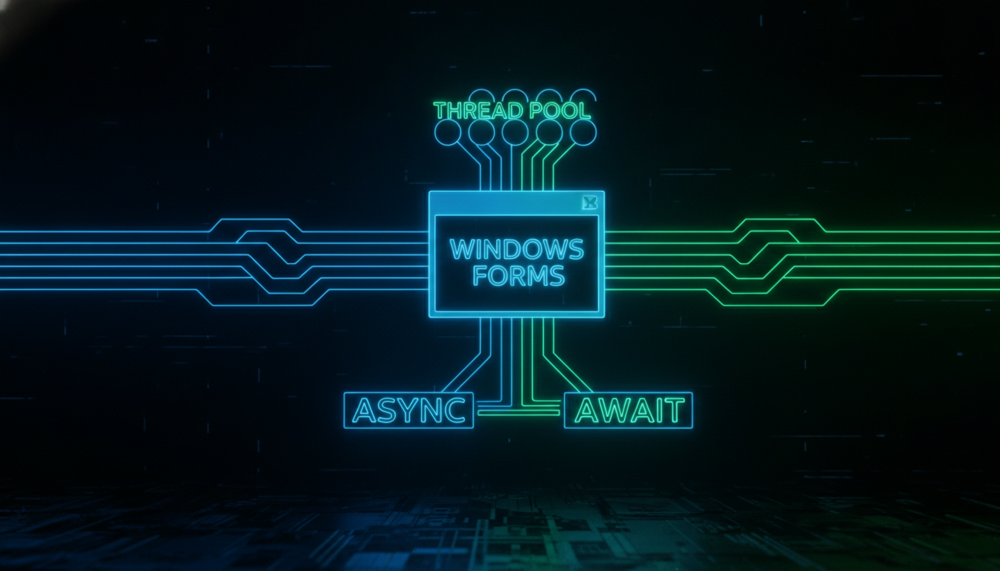

Thread, Invoke, кросспотоковий доступ до UI

// Оновлення UI з іншого потоку
void UpdateUI(String^ message) {
if (this->InvokeRequired) {
this->Invoke(gcnew Action<String^>(
this, &MyForm::UpdateUI), message);
return;
}
lblStatus->Text = message;
}
// Запуск у потоці
void StartLongOperation() {
Thread^ thread = gcnew Thread(
gcnew ThreadStart(this, &MyForm::DoWork));
thread->IsBackground = true;
thread->Start();
}
void DoWork() {
for (int i = 0; i <= 100; i++) {
UpdateUI("Прогрес: " + i + "%");
Thread::Sleep(50);
}
UpdateUI("Готово!");
}
// Task (C++11)
void StartAsync() {
Task::Run(gcnew Action(this, &MyForm::DoWork));
}